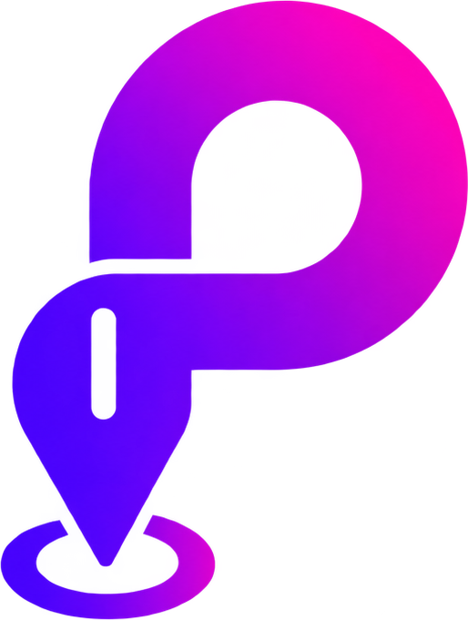

Cartelera Cultural
Eventos y actividades culturales en la ciudad de Río Cuarto
Sin eventos para esta búsqueda
No encontramos eventos que coincidan con tu filtro. Probá con otra categoría o fecha.
No hay más eventos

No tenés notificaciones por ahora.
Eventos y actividades culturales en la ciudad de Río Cuarto
No encontramos eventos que coincidan con tu filtro. Probá con otra categoría o fecha.
No hay más eventos